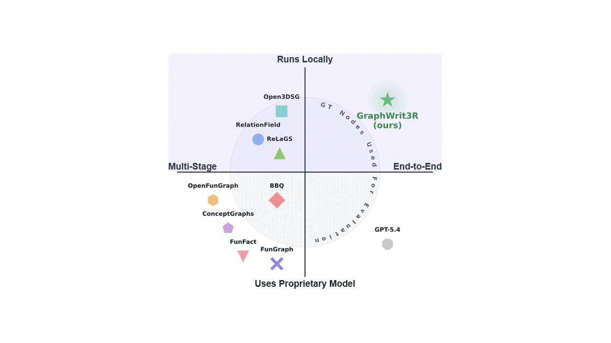
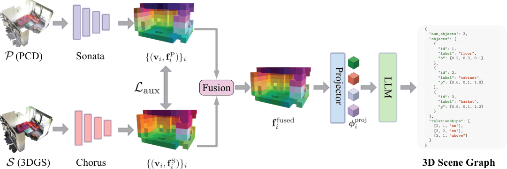
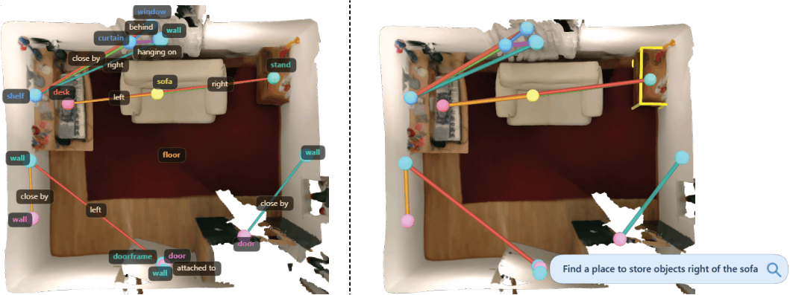
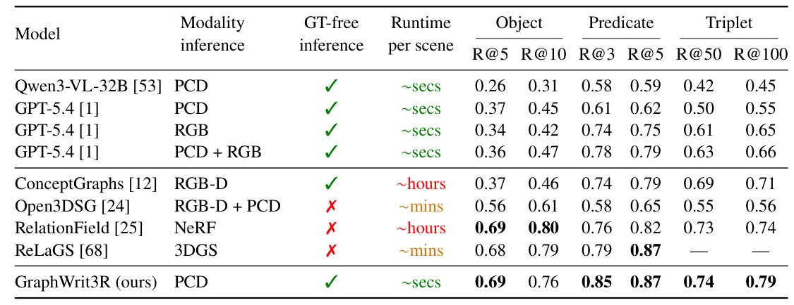

3D scene graphs provide a structured representation of complex environments by encoding objects, their semantic attributes, and the spatial and functional relationships between them. Current approaches for 3D scene graph generation suffer from several fundamental limitations. They rely on complex multi-stage pipelines with explicit intermediate representations, making systems fragile and prone to error propagation. They assume access to ground-truth object annotations during inference, which deviates from real-world scenarios. They depend on proprietary models, hindering open-source deployment, or incur prohibitively slow inference. We present GraphWrit3R, a simple end-to-end method that takes a 3D point cloud, Gaussian Splats, or a combination of both as input, and directly outputs a complete scene graph as a structured JSON script. The graph lists all objects, their semantic attributes, and the relationships between them, while avoiding all of the above mentioned limitations. The choice of multiple input modalities is purely for versatility, allowing a single set of weights to handle diverse scenarios. Point cloud inputs are encoded via Sonata and Gaussian Splat inputs via Chorus, with both modalities projected onto a shared voxel grid and fused through a novel per-voxel contrastive alignment loss before being decoded by a large language model. As a natural consequence of the LLM, GraphWrit3R also supports open-vocabulary querying. On the 3DSSG benchmark, our method achieves state-of-the-art performance on object class, predicate, and triplet recall, outperforming methods that rely on ground-truth object annotations during inference. We further provide qualitative results and analyze different input modality configurations, contrastive loss formulations, and token fusion strategies.

GraphWrit3R differs from prior 3D scene graph methods by operating as a fully end-to-end latent pipeline. It avoids explicit intermediate predictions, ground-truth object annotations at evaluation time, proprietary model calls, and slow multi-stage processing, while directly generating structured scene graphs from 3D inputs. The comparison above summarizes these differences against relevant methods.

GraphWrit3R takes a 3D scene represented as a point cloud, Gaussian Splats, or both, and directly generates a complete 3D scene graph as a structured JSON script. The output contains detected objects, their semantic labels, 3D locations, bounding boxes, orientations, and directed subject-predicate-object relationships. Unlike prior multi-stage pipelines, GraphWrit3R does not first build explicit object proposals or intermediate graph structures, but performs scene graph generation in a single end-to-end latent pipeline.
Point clouds are encoded by Sonata, while Gaussian Splats are encoded by Chorus. Both encoders produce sparse voxel tokens on a shared grid, where co-located features can be fused and projected into the input embedding space of an LLM, which autoregressively writes the final JSON scene graph. To make the two modalities compatible, we train with a per-voxel cross-modal alignment loss combining InfoNCE, cosine, and MSE feature-matching terms, enabling one set of weights to operate with point clouds, Gaussian Splats, or both at inference time.

GraphWrit3R directly predicts a structured 3D scene graph from a raw 3D input. The generated graph contains detected object nodes and semantic relationship edges, which can then be used for open-vocabulary querying. Given a natural-language query, we retrieve the corresponding objects and relations by matching against the predicted scene graph labels, enabling spatially grounded interaction with the 3D scene.

On RIO10, GraphWrit3R achieves the best overall scene graph generation performance across object, predicate, and triplet recall. Notably, it does so while remaining GT-free at inference time: unlike methods that are given ground-truth object boxes, GraphWrit3R must jointly detect objects, classify them, and predict their relationships directly from the 3D input.
@article{milivojevic2026graphwrit3r,
title = {GraphWrit3R: End-to-End Writing of Scene Graphs for Multi-Modal 3D Scenes},
author = {Milivojevic, Luka and Popovic, Nikola and Deb Sarkar, Sayan and Koch, Sebastian and Armeni, Iro and Van Gool, Luc and Paudel, Danda Pani},
journal = {arXiv preprint},
year = {2026}
}